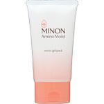
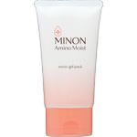

商品の特徴
スキンケアの最後に塗るだけで、まるでシートマスクを貼ったまま過ごすような保湿のスペシャルケア。
- 成分・分量
- 【全成分】
水、ＤＰＧ、ＢＧ、グリセリン、プロパンジオール、ホホバ種子油、ベタイン、ラウロイルグルタミン酸ジ（フィトステリル／オクチルドデシル）、スクワラン、オクテニルコハク酸デンプンＡｌ、水添レシチン、カルボマー、セリン、キサンタンガム、フェノキシエタノール、水酸化Ｋ、１，２－ヘキサンジオール、アルギニン、グリチルリチン酸２Ｋ、ＰＣＡ－Ｎａ、アラニン、リシンＨＣｌ、グリシン、ラウリン酸ポリグリセリル－１０、トレオニン、バリン、ヒスチジン、プロリン、ロイシン、ペンテト酸５Ｎａ、ユビキノン、カルノシン、ポリクオタニウム－６１、ヒアルロン酸Ｎａ、トコフェロール
- 用法及び用量
- スキンケアの最後に、清潔な手のひらに適量（さくらんぼ１個程度）を取り、顔全体から首元になじませるように塗ります。額、目元、口元など特に乾燥による小ジワが気になる部分には重ねづけしてください。洗い流す必要はありません。
 
